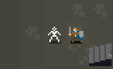
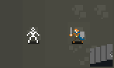
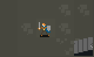

Caverns of Sevendral is focused on combat. Enemies walk toward the player, after every player move.
If you're next to an enemy, and the space behind them is empty, you can bump into them to shove them away:
 
If you walk toward an enemy from one space away, you will attack them and kill them:

Spells can also be used to kill enemies, best to save them to get out of a jam.
Caverns of Sevendral was written for the 2017 Seven Day Roguelike Challenge, by Ross Andrews